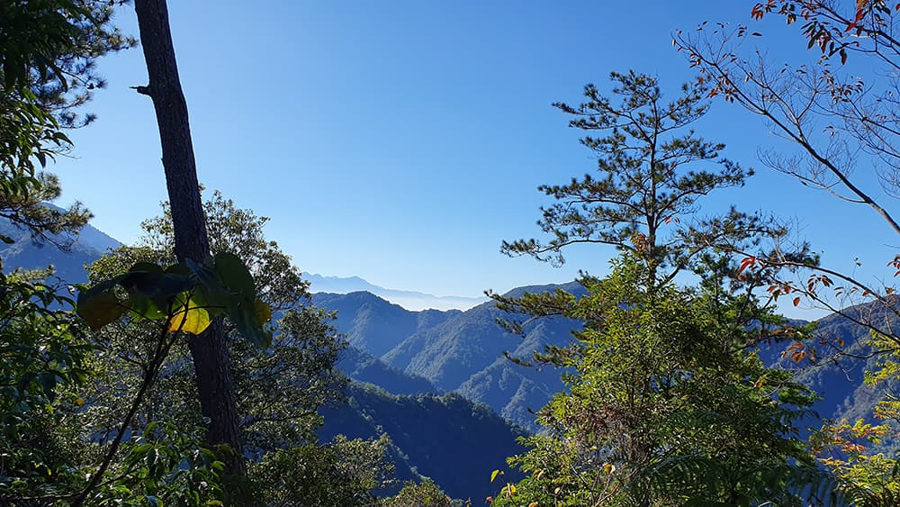
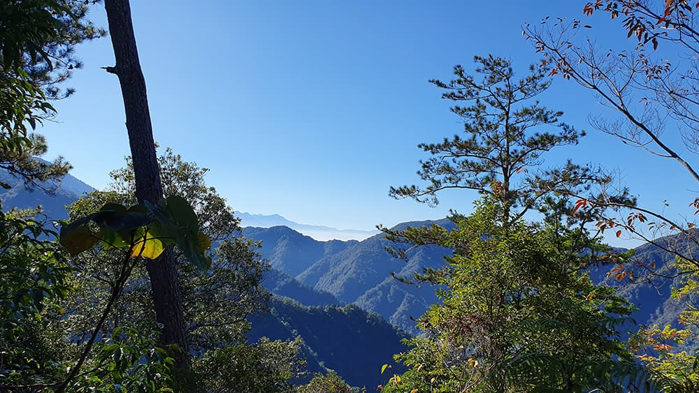

唐麻丹山
台中市和平區
1,305m
2019.12.15
三角點來回約 8K + 蝴蝶谷瀑布來回 6K
松鶴唐麻丹露營區唐麻丹山步道裡冷松鶴岔口蝴蝶谷岔口唐麻丹山三角點原路折返松鶴唐麻丹露營區
前一天爬完東卯山後就地入住谷關的一家飯店，度過愜意的一晚後隔天起了大早，繼續推進蒐集谷關七雄的進程。第二天我們預計拿下兩座里程數較短的兩座七雄──唐麻丹山與屋我尾山，早上就先從距離飯店比較近的唐麻丹山開始起行。

一般爬唐麻丹山有兩個登山口，分別起始於裡冷部落與松鶴部落，其中裡冷部落的路線較為正統，只是難度較高，路程也比較長。而我們選擇由松鶴部落進入，抵達「松鶴唐麻丹山露營區」，付了一百元停車費，隨即著裝出發。和前一天東卯山的路徑狀況相似，一開始都是在原始土徑上留下登山鞋的足印。
對面聳立的山就是東卯山，也許在一些旁人眼裡，很難想像我們這些登山人怎能在數小時之內登高望遠，但得到的真相往往也很單純，就是一直走一直走，累了就休息，休息完了繼續走，然後就到了。
來到松鶴線與裡冷線的岔路口，兩線會在此處匯聚成攻頂唐麻丹山的單行道，但從指標標示的里程可以看到，裡冷線１．５Ｋ足足比松鶴線０．６Ｋ多了接近一公里的山徑要走。
連續兩天都是好天氣，真是幸運。
行至約２．５Ｋ處，來到仁者與智者的抉擇點，：仁者樂山，請往唐麻丹山主峰上行；智者樂水，則下切蝴蝶谷瀑布。如果今天只爬唐麻丹一座，我們就會厚臉皮地宣稱仁智兼具，但礙於時間與目的，還是決定專注在仁者之道上。
驟地迎面而來的是石階砌成的長廊，兩旁還牽起了拉繩，以往經驗告訴我們有拉繩通常代表該路段具有某種程度的危險性，但眼下唐麻丹山這條石階則不然，感覺像是用來讓爬累的登山客可以靠著喘氣用的，這一段陡上基本就是整趟唐麻丹登頂過程裡最勞累的部份，克服它之後也就差不多要登頂了。
山頂腹地不大，四週都為樹木所遮覆，陽光從樹葉的縫隙中投射進來，宛如星空小夜燈的白晝版。
唐麻丹山，谷關七雄中的老么，海拔１３０５公尺。是我參加谷關七雄挑戰活動以來成功攻頂的第三座山。
 

可惜的是唐麻丹山山頂的視野都被樹木遮擋住了，只能從狹窄的樹木間隙中窺探其他山峰的樣貌。由於下一個目標屋我尾山的登山口在大雪山林道上（此行不走麗陽線），得先離開谷關後再接大雪山林道上山，需要花不少時間在交通上，因此我們沒有在上面休息太久，便又匆匆下山。
＊＊＊我是時空分隔線＊＊＊
距離爬完唐麻丹半年後的某天，想起之前對自己許下下次要來把未竟的另一半給補完的承諾還未兌現，恰好夏日炎炎正適合玩水消暑，遂決定走訪一趟瀑布比山本身還要熱門的蝴蝶谷瀑布。
這次一樣從松鶴部落的登山口入山，在唐麻丹山與蝴蝶谷瀑布路徑分岔處選擇往蝴蝶谷方向續行。從岔口到蝴蝶谷瀑布約１．６公里路程，大多都屬於之字形向下緩坡路徑，也就沒怎麼拍照記錄了，要小心的是降雨過後的土徑十分濕滑（穿著登山鞋也會滑的程度），最好隨身使用登山杖防止摔傷。
後半段築有人工棧橋，空氣中夾雜著潺潺水聲與此起彼落的人聲喧鬧，意味著很快就能一睹蝴蝶谷瀑布氣勢滂沱之貌。
人工木棧橋的終點，瀑布沖刷刮出的水絲漫天飛舞，時不時掠過臉龐，為因天氣炎熱而飆升的體溫帶來一陣又一陣的沁涼。

摸著溪流的大石頭涉水至瀑布下的深潭附近，太久沒這麼近距離欣賞瀑布了，內心有些被它洶湧的氣勢給震懾到。以前常看電視影劇裡的角色為了修行而站在瀑布底下，任由瀑布強勁的水流沖襲身體，藉此磨練身心...對照實際所見，不禁懷疑真有辦法可以承受？我不擅水，所以這個答案只能由別人來解答。不過待了老半天，也只不過才等到幾個熱血的年輕男人跳進深潭裡徜徉，沒見得有誰實際鑽進瀑布底下過。
最後來提提蝴蝶谷瀑布這個名字，蝴蝶谷瀑布真的有蝴蝶嗎？答案是肯定的，不僅非常多，而且各種種類都有。牠們也似乎不怎麼怕人，信眼隨到之處盡是蝴蝶翩翩起舞的美麗身姿。
雖然唐麻丹山山貌本身對比其他兄弟顯得比較不具特色，山頂的展望也不怎麼良好，看上去彷彿是一座徒有虛名的小卒。然而作為七雄中唯一具有瀑布景觀的祂，每逢例假日前來消暑的遊客絡繹不絕，充分展示出善用其他優勢來彌補先天不足的概念。而我們人又何嘗不能如此？